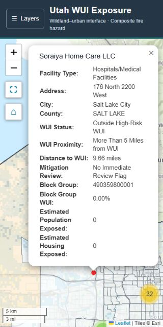
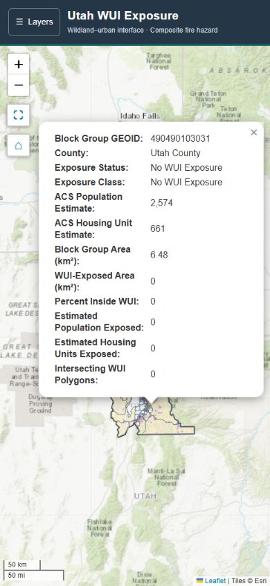
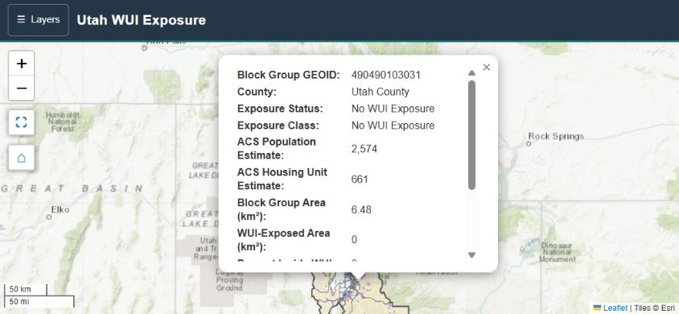

Desktop and responsive popup checks passed. Both native fullscreen checks were manually confirmed by the user.
The dashboard and notebook template now constrain popup content to the map, wrap nested facility panels, scroll long tables, and reposition open popups after layout changes. Close buttons remained visible at all tested sizes.
Eleven overlays, exclusive basemaps, opacity keyboard adjustment, information disclosure, legend state, county popups, sidebar collapse/expand, facility clusters, and reset extent were checked. Mobile drawer focus, Escape dismissal, map inertness, and keyboard scrolling passed. No captured browser console warnings or errors.
| Final regression | Viewport | Result |
|---|---|---|
| facility_desktop | 1440 × 1000 | Pass |
| facility_desktop_1366 | 1366 × 768 | Pass |
| facility_mobile_390 | 390 × 844 | Pass |
| facility_narrow_320 | 320 × 640 | Pass |
| facility_landscape | 844 × 390 | Pass |
| facility_tablet_768 | 768 × 1024 | Pass |
| block_group_final_desktop | 1440 × 1000 | Pass |
| block_group_final_320 | 320 × 640 | Pass |
| block_group_final_landscape | 844 × 390 | Pass |
| block_group_final_390 | 390 × 844 | Pass |
Snapshot mode is retained. The validated scientific outputs, code modules, environment and matching v1 data snapshot are unchanged. The two revised presentation cells have cleared counts and outputs. The full analysis was not rerun for this UI-only revision. The updated dashboard contains the same added CSS/JavaScript as the notebook template.
Native fullscreen is recorded as user manual confirmation, not automated validation. That confirmation preceded the last nested facility-width CSS clamp; fullscreen and block-group logic did not change. The final facility and block-group responsive regressions above followed that refinement.
Check the deployed GitHub Pages site and hosted snapshot download, then physical-phone gestures. Live refresh and comprehensive accessibility/cross-browser testing remain outside the accepted scope.
Validation record · Measurements · Release handoff


